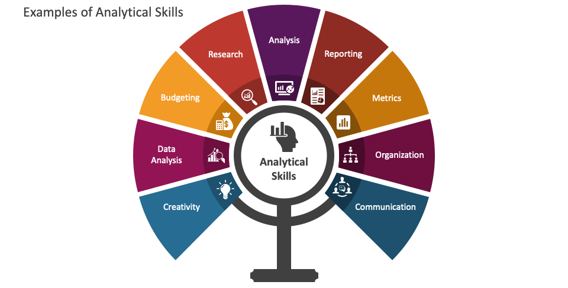

FAQs ▾
🤝 I’m Dianabasi Robinson, a Data and Reporting
Analyst with a Passion for Solving Business Problems
through Data Insights. Dive into my Profile for a Snapshot
of my Skills and Experience....✍🏾
🧰
SKILLS: SQL •Python •Excel •Power BI •ArcGIS •Tableau
•Domo •Healthcare Analytics •Supply Chain •ETL •HTML/CSS
•Process Improvement •MS Visio •Cust. Service
My Journey as a Data Analyst
Starting my career in data analytics, I've had varied experiences in different industries.
As a data analyst, I've moved from handling supplies in the oil and gas sector to working
with healthcare data, picking up a range of skills along the way.
In my first role, I managed inventory and procurement processes for an oil and gas system.
I focused on making these processes efficient, dealing with large systems and learning the basics of data analysis.
Wanting to explore more, I shifted to healthcare, where I looked into claims. This included processing claims and creating
reports for money owed and paid. This period taught me a lot about the complexities of healthcare data.
Later on, I worked in supporting clinical operations, where I analyzed various aspects like population health, referrals,
provider analysis, and more. It was a broad role that required a careful approach to data, helping improve how clinics operate.
I'm skilled in using tools like SQL, Power BI, Tableau, and Python. I can work with different types of data, finding patterns
and insights to help decision-making. One thing that sets me apart is my commitment to always learning. In the ever-changing field
of data analytics, I stay updated on new technologies and methods. This keeps my skills sharp and helps me find creative solutions.
In a nutshell, my journey as a data analyst has taken me through different industries, from oil and gas to healthcare.
I've gained skills and knowledge that allow me to contribute effectively to any data-related task, including improving
business processes for enhanced efficiency and effectiveness.
PROFESSIONAL EXPERIENCE
Centene Corporations | Dec 2023 - Present •
United HealthGroup | Nov 2022 - Aug 2023 •
St. Agnes HealthCare Professionals | July 2022 - Nov 2022 •
Miden Systems | Oct 2019 - May 2022
Centene Coporations
Are we alone in the universe?
For millennia, humans have turned to the sky to answer this question. Now, thanks to research generously funded by
W. Avy, a UFO-enthusiast and amateur ufologist, we can supplement our sky-searching with data analysis. The release
of this analysis is well-timed: It coincides with the celebration of World UFO Day, which is a moment for ufologists
around the world to connect, relax, and sample a range of UFO-themed snacks, said Dr. Ursula F. Olivier,
the world's preeminent expert on circular sightings.
- Analyze claims payments to validate reimbursement according to contract and authorization.
- Streamlined accounts receivable workflows, leading to a 25% improvement in cash flow and a reduction in outstanding AR aging.
- Developed and maintained key performance indicators (KPIs) to monitor and report on revenue cycle metrics.
- Validate and prepare bi-weekly visit data for the generation of claims files for various insurers.
- Processed claims, ensuring accuracy, completeness, and compliance with regulatory standards.
- Assigned accurate medical codes and executed precise billing practices for maximum reimbursement.
- Conducted regular audits of billing and coding practices to ensure compliance with regulations and guidelines.
- Monitor electronic visit verification data and reconcile visit calls as needed.
- Successfully resolved claim discrepancies, appealed denied claims, and minimized errors for reimbursement.
- Effectively communicated with healthcare providers, obtaining necessary information to facilitate claim resolution.
United HealthGroup
Established in 2014,
Robinson Foundation is a non-governmental organization dedicated to making a positive impact on the lives of the
less fortunate across the globe. From the outset, our mission has been to bring hope, support, and opportunities
to those in need, working towards creating a world where everyone has the chance to thrive.
- Collaborate with stakeholders to gather requirements and translate them into analysis reports.
- Perform complex data analysis, aggregation, and reporting from multi-database systems covering medical
claims, eligibility, member outcome, utilization, enrollment, provider network, population health, and quality metrics related to member care
- Develop, test, document, and maintain queries for EHR/EMR systems and databases.
- Conducted cost containment and revenue tracking analysis, revealing hidden patterns in claims data.
- Develop and automate business intelligence dashboard and reports for customers and stakeholders.
- Provide executive summaries and presentations of analytical findings to senior leadership teams.
- Implement ETL procedures for data movement across systems and platforms.
- Analyze patient populations to determine at-risk patients for care interventions.
- Assessed primary care network data and staffing ratios to identify opportunities for staffing improvement.
- Utilized ArcGIS to improve provider-patient scheduling and enhance overall efficiency in appointment management.
- Compiled member survey data to measure satisfaction rates.
St. Agnes Healthcare professionals
Established in 2014,
Robinson Foundation is a non-governmental organization dedicated to making a positive impact on the lives of the
less fortunate across the globe. From the outset, our mission has been to bring hope, support, and opportunities
to those in need, working towards creating a world where everyone has the chance to thrive.
- Analyze claims payments to validate reimbursement according to contract and authorization.
- Streamlined accounts receivable workflows, leading to a 25% improvement in cash flow and a reduction in outstanding AR aging.
- Developed and maintained key performance indicators (KPIs) to monitor and report on revenue cycle metrics.
- Validate and prepare bi-weekly visit data for the generation of claims files for various insurers.
- Processed claims, ensuring accuracy, completeness, and compliance with regulatory standards.
- Assigned accurate medical codes and executed precise billing practices for maximum reimbursement.
- Conducted regular audits of billing and coding practices to ensure compliance with regulations and guidelines.
- Monitor electronic visit verification data and reconcile visit calls as needed.
- Successfully resolved claim discrepancies, appealed denied claims, and minimized errors for reimbursement.
- Effectively communicated with healthcare providers, obtaining necessary information to facilitate claim resolution.
Miden Sytems
Established in 2014,
Robinson Foundation is a non-governmental organization dedicated to making a positive impact on the lives of the
less fortunate across the globe. From the outset, our mission has been to bring hope, support, and opportunities
to those in need, working towards creating a world where everyone has the chance to thrive.
- Supported business units with reports and analytics ensuring timely and quality deliverables including operational
metrics and specific analysis projects as requested.
- Conducted demand forecasting/inventory analysis to optimize stock levels, resulting in a 20% reduction in holding costs.
- Implemented data-driven strategies to enhance supply chain efficiency, leading to a 15% improvement in order fulfillment times.
- Utilized advanced analytics to identify trends, risks, and opportunities in the supply chain, enhancing decision-making processes.
- Conducted root cause analysis of supply chain disruptions and implemented corrective actions to prevent issues.
- Led cross-functional teams to streamline processes/improve communication between units, reducing lead times by 25%.
- Developed and maintained key performance indicators (KPIs) to measure and improve supply chain performance.
- Leveraged forecasting models and analysis techniques to produce performance projections.
- Combined and analyzed various SQL data sources to extract business insight from financial and operational data.
- Produced internal audit reports to assess compliance with internal policies and accreditation requirements.

Established in 2014,
Robinson Foundation is a non-governmental organization dedicated to making a positive impact on the lives of the
less fortunate across the globe. From the outset, our mission has been to bring hope, support, and opportunities
to those in need, working towards creating a world where everyone has the chance to thrive.
At Robinson Foundation,
our primary mission is to extend a helping hand to the most vulnerable members of our global community. We focus
on delivering essential charity services to those facing adversity, ensuring that they receive the support and
resources necessary for a better life.